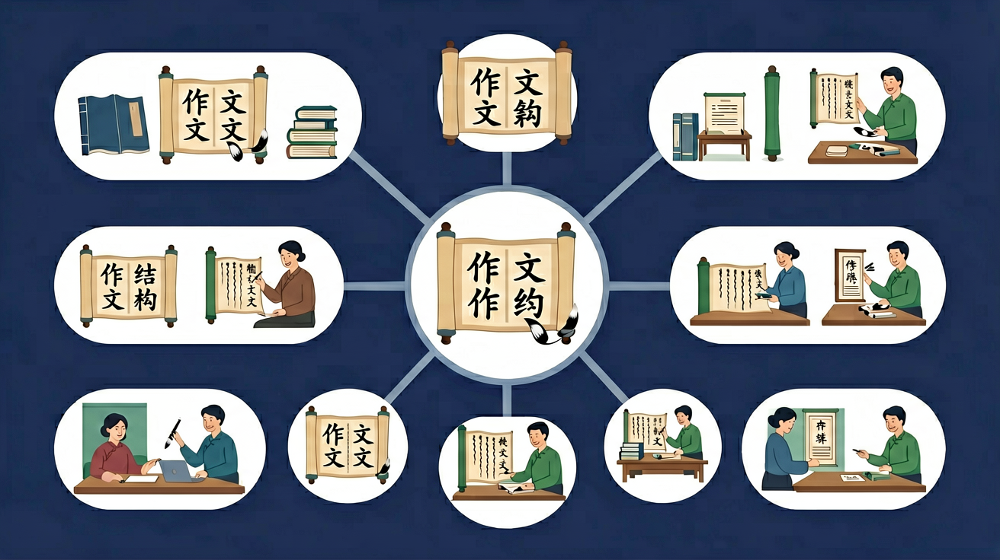

🤖 AI 多模态互动区
把你的问题告诉 AI，或上传图片让 AI 帮你分析
请输入你的作文题目，AI将帮你分析关键词并给出结构建议
点击复制此提示词 →
📎
点击或拖拽图片到这里
搭好骨架，文章才能站得稳！

你已经会写句子和段落了
写作文时常常开头铺垫太长，结尾草草收场，不知道怎么安排结构
今天学习作文结构「凤头猪肚豹尾」和审题三步法
测一测，帮助我们了解你的基础（不计入成绩）
题1：「凤头猪肚豹尾」中「豹尾」指的是什么？
题2：写作文前最重要的一步是什么？
💡 无论答对答错，继续学习都会有收获！
和前测对比，看看你进步了多少！
题1：题目「一件难忘的事」，以下审题分析正确的是？
题2：以下哪个开头方式最符合「凤头」的要求？
💡 类比记忆：把今天的知识和你已经知道的事物联系起来，记得更牢！
❌ 常见错误
题目「一件难忘的事」→写了三件事都没有展开
✅ 正确做法
「一件难忘的事」要求：①只写一件事②写出为什么难忘③详写经过
🩺 错因诊断：审题三步：①圈关键词（一件+难忘+事）②确定范围（只能写一件）③找切入点（重点写「难忘」在哪里）
把你的问题告诉 AI，或上传图片让 AI 帮你分析
点击或拖拽图片到这里
回忆：今天学了哪些关键词和规则？试着说出来。
用自己的话解释今天学的核心概念，不看书能说清楚吗？
用今天的知识解决一个实际问题，或写一个新例子。
把今天的知识与已有知识联系起来：有什么共同点？有什么区别？能不能自己创造一道新题？
先独立作答，再点选项查看对错与错因。
下列哪项是作文结构中的基本部分？
在写作文时，下列哪种方法可以帮助文章结构更清晰？
下列哪种情况会使文章结构不清晰？
作文的基本结构包括____、____和____三个部分。
答案：开头、中间、结尾
作文的基本结构包括开头、中间和结尾三个部分。
在写作文时，列出____可以帮助文章结构更清晰。
答案：提纲
列出提纲可以帮助作者理清思路，使文章结构更清晰。
下列哪项是作文结构中的关键要素？
请选择一篇你喜欢的作文，分析其结构。
❓ 为什么作文要有开头、中间和结尾？
❓ 怎么才能让我的作文不跑题？
❓ 老师说的‘过渡句’到底是什么呀？
学完这一课，这些问题你都能自信地回答。
🎯 能说出作文三部分的基本功能
🎯 能判断例文中的结构问题
🎯 能分析过渡句的连接作用
像搭积木一样把作文分成开头、中间、结尾三部分
开头点题，中间展开，结尾总结，像汉堡包一样层层分明
对比流水账和结构清晰的文章，感受段落衔接的重要性
用彩色笔标出范文中的过渡句，观察它们如何串联内容
用‘首先-然后-最后’的框架描述一次春游活动
✅ 用空行或‘首先’‘接着’等词语分段
💡 缺乏段落意识
✅ 结尾要呼应开头内容
💡 强行拔高主题
口诀：开头点题中间展，结尾总结不能少
类比：就像盖房子，先打地基再砌墙，最后封顶才完整